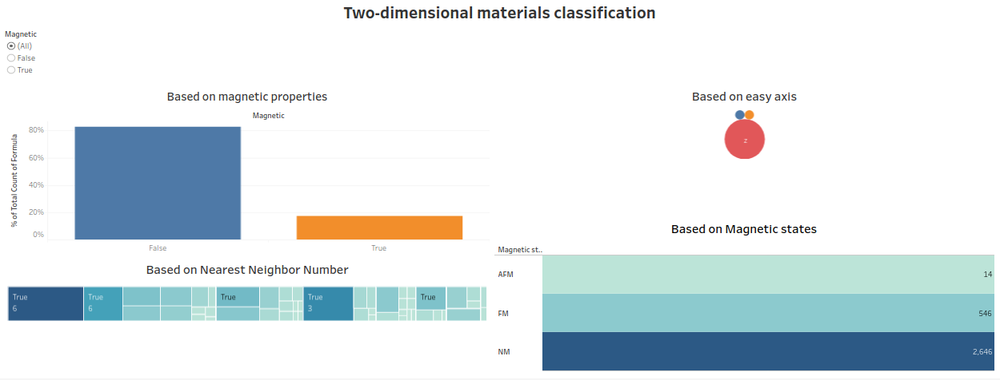
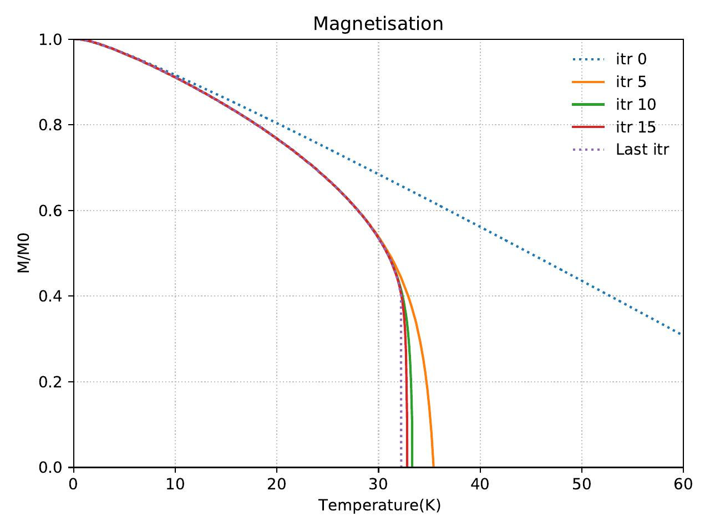
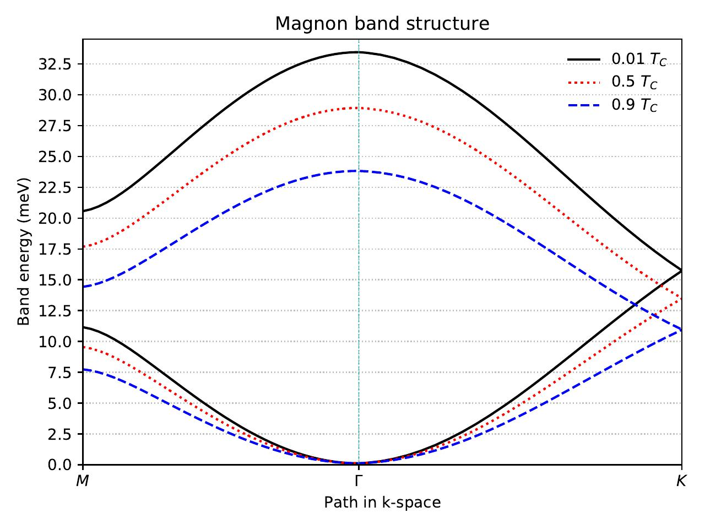

How to Classify New Materials?
Dealing with 3400 diverse materials, each with its unique properties, initially appears challenging to establish relationships and perform classification. However, with the aid of data analysis tools such as pandas for creating data frames, cleaning, and Tableau for visualization, it becomes much easier to identify patterns and insights.


Additionally, it seems there is another missing parameter that could provide more clarity regarding the classification of magnetic materials. These parameters have been calculated using quantum mechanics statistics.